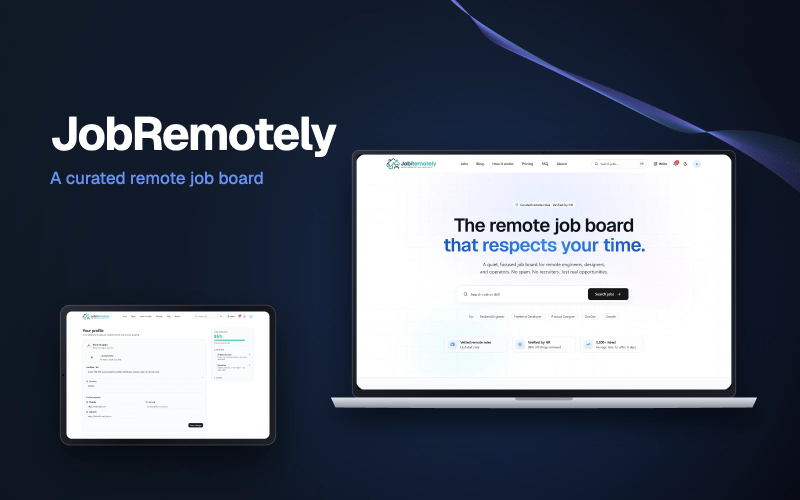

12 / Marketpleys
JobRemotely — Seçilmiş uzaqdan iş vakansiyaları platforması
Maaşı açıq göstərilən, HR tərəfindən yoxlanılmış və spamdan təmiz vakansiyalar.

- 1280+Vitest testi
- 3ATS mənbəyi — Greenhouse, Lever, Ashby
- 7mərhələli işə qəbul prosesi
01 / Ümumi baxış
JobRemotely uzaqdan işləyən mühəndislər, dizaynerlər və operatorlar üçün HR tərəfindən yoxlanılmış vakansiyaları bir araya gətirən iş elanları platformasıdır. Platformada yalnız maaşı açıq göstərilən uzaqdan iş vakansiyaları dərc olunur, namizədlər isə avtomatlaşdırılmış axın vasitəsilə müraciətdən iş təklifinədək irəliləyir.
02 / Problem
Uzaqdan iş axtaranlar spam elanlar, gizlədilmiş maaşlar və rekruter mesajları arasında itib-batır. Müraciət etdikdən sonra namizədlər müraciətlərinin hansı mərhələdə olduğunu heç vaxt bilmir.
03 / Yanaşmamız
Vakansiyalar Greenhouse, Lever və Ashby ATS platformalarından planlaşdırılmış skreypinq yolu ilə toplanır, sonra maaş və dil üzrə filtrlənir. Müraciətin statusu sonlu vəziyyət maşınına (finite state machine) bağlanıb: o, yalnız icazə verilən keçidlərlə dəyişir, buna görə də namizəd həmişə düzgün mərhələni görür.
04 / Nəticə
Namizədlər bir kliklə müraciət edir və bacarıq testi, dil yoxlaması, müsahibələr və iş təklifi mərhələlərindən şəffaf şəkildə keçir. Adminlər konversiya qıfı, ötürücülük və mərhələlərdə keçirilən vaxt üzrə canlı göstəriciləri izləyir.
05 / Əsas funksiyalar
Nə edir.
- 01
Seçilmiş vakansiyalar lövhəsi
HR tərəfindən yoxlanılmış, spamsız uzaqdan iş vakansiyaları. Şirkətlər namizədlərin şəxsiyyətini görmür (anonim müraciət).
- 02
Çoxmərhələli proses
Müraciət → ilkin seçim → bacarıq testi → dil → müsahibə → iş təklifi → işə qəbul.
- 03
Süni intellekt alətləri
CV əsasında profilin avtomatik doldurulması və motivasiya məktublarının yaradılması.
- 04
Avtomatlaşdırılmış skreypinq
Maaş və dil filtrləri ilə ATS platformalarından planlaşdırılmış toplama.
- 05
Admin analitikası
Status hadisələri əsasında hesablanan konversiya qıfı, ötürücülük və mərhələ müddəti göstəriciləri.
06 / Arxitektura
Necə qurulub.
Sonlu vəziyyət maşını
Müraciətin statusu yalnız icazə verilən keçidlərlə dəyişir; optimistic concurrency konfliktlərinin qarşısı HTTP 409 ilə alınır.
Vahid həqiqət mənbəyi
Zod sxemləri API ilə frontend arasında paylaşılır, cavablar isə tipləşdirilmiş ok() / err() zərflərindən istifadə edir.
Ayrılmış fon işləri
E-poçt, skreypinq, Telegram bildirişləri və baxış sayğacları veb prosesdən kənarda, pg-boss worker-ində işləyir.
07 / Texnologiya
Texnoloji stek.
- Freymvork
- Next.js 15 (App Router / RSC)
- React 19
- TypeScript 5.7
- UI
- Tailwind CSS v4
- Radix UI
- shadcn/ui
- Framer Motion
- Təhlükəsizlik
- NextAuth v5
- JWT (jose)
- bcrypt
- Google OAuth
- Məlumatlar
- PostgreSQL
- Prisma 6
- Redis (ioredis)
- Fon tapşırıqları
- pg-boss worker
- Süni intellekt
- OpenAI — CV əsasında profilin doldurulması və motivasiya məktubları
- Keyfiyyət
- Vitest (1280+ test)
- Playwright
- axe əlçatanlıq yoxlamaları
- İnfrastruktur
- Docker
- Cloudflare DNS/TLS
- Cron əsaslı skreypinq
08 / Digər işlər
Oxşar layihələr.
«Marketpleys» istiqamətində və ona yaxın digər işlərimiz.
Oxşar ideyanız
var?
Gəlin onu reallığa çevirək. ♥